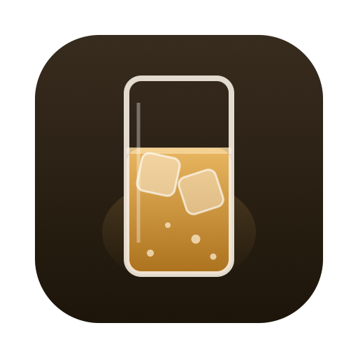
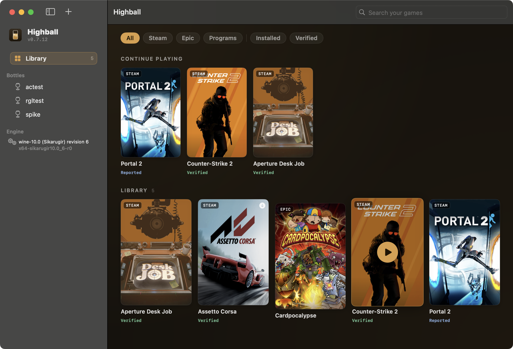

Run your Windows games on Apple Silicon. Free, open source, and honest about what works — down to which renderer each game needs.
notarized .dmg · auto-updating · Apple Silicon · macOS 14+ · GPL-3, no paid tier ever

A verified Wine engine is assembled from pinned, checksummed upstream releases — then Steam, Epic, GOG, Battle.net and more install with one click. Nothing is hosted by Highball itself.
Games appear as cards with a verdict from the open database: verified, reported, predicted — and the renderer that actually works (DXMT, D3DMetal, DXVK). Play launches with the right one.
Every claim carries its provenance: verified on real hardware, reported upstream, or derived from 378k ProtonDB reports crossed with anti-cheat knowledge. CC0 — use it anywhere.
msync-aware launching gave +42% frame rate on the reference machine, verified with Metal's own performance HUD. Frame caps and async shader compilation are one toggle away.
No Wine fork, no binary hosting, engine-agnostic by design — the failure modes that ended Whisky are structurally removed. Engines update via a JSON manifest.
Bugs go upstream; the database helps CrossOver users too. If you want commercial-grade support, buy CrossOver — it funds Wine's Mac work.
Kernel anti-cheat cannot work. Valorant, Fortnite, Destiny 2, Call of Duty and friends load Windows kernel drivers that no compatibility layer can provide. Highball flags them before you download 80 GB — check the database first.